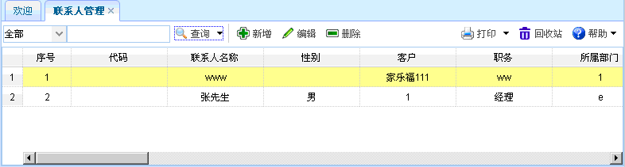
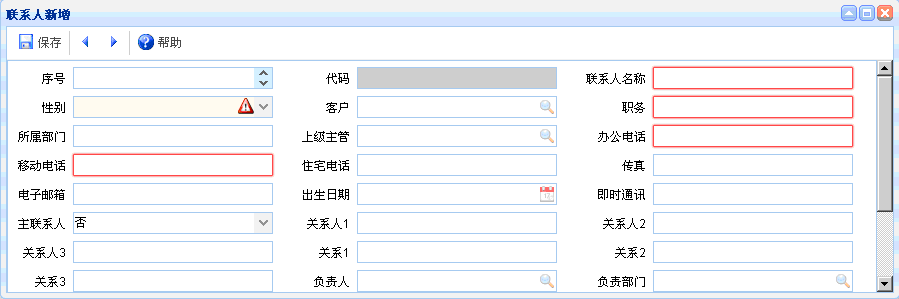
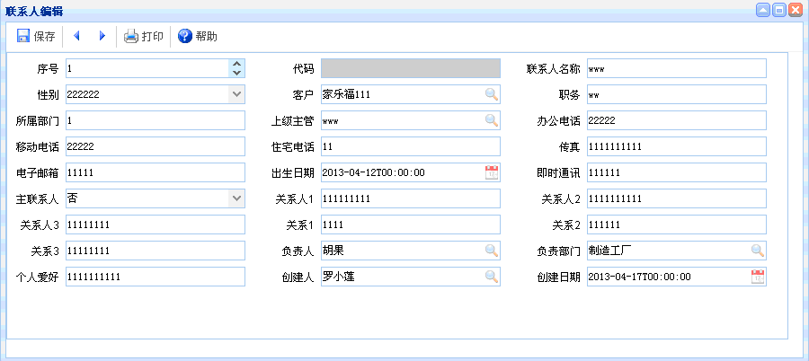

联系人管理
联系人管理
概述：主要是对联系人的基本信息进行维护。
功能介绍：点击【联系人管理】进入联系人管理页面，如下图所示。功能主要包括：查询、新增、编辑、删除。

图表6-x8-1【联系人管理】
图表6-x8-1【联系人管理】
【查询】：通过设置查询条件，查询出符合条件的联系人管理信息。
【新增】：联系人新增，红色文本框为必填项，灰色文本框为默认，有搜索图案的要进行查询。如下图所示。新增完毕，点击保存。

图表6-x8-2【联系人新增】
图表6-x8-2【联系人新增】
【编辑】：联系人编辑，灰色文本框为默认，有搜索图案的要进行查询。选中需要编辑的联系人管理信息，点击编辑按钮，出现如下图所示内容。进行编辑操作，编辑完毕点击保存。

图表6-x8-3【联系人编辑】
图表6-x8-3【联系人编辑】
【删除】：选中某项联系人管理信息后，点击删除，即可删除该联系人管理信息。
 常见问题
常见问题
1、？
2、？
3、？